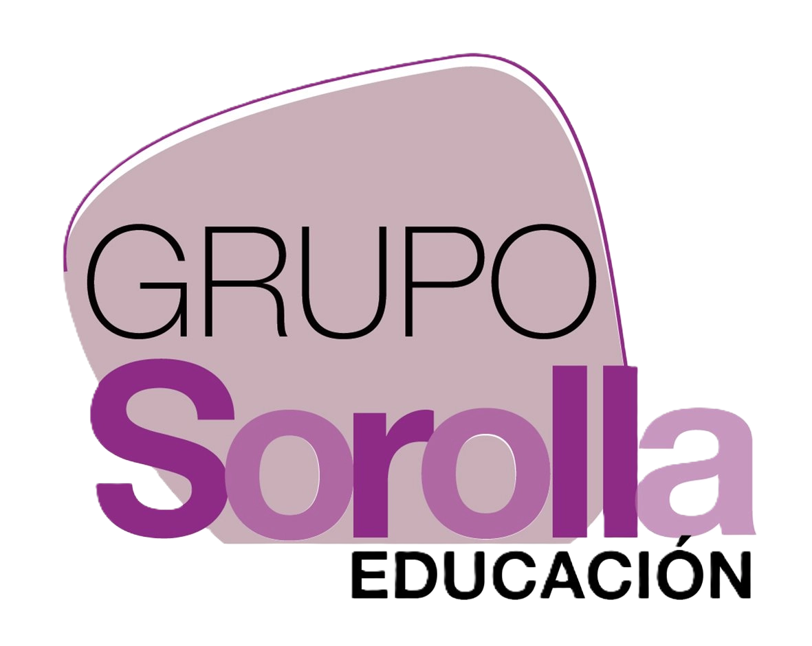
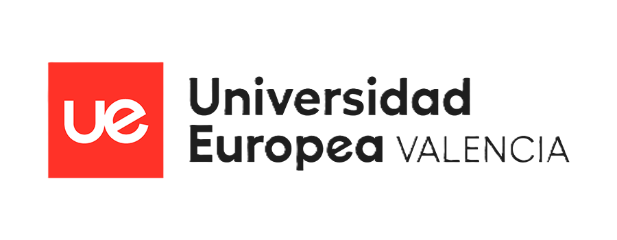
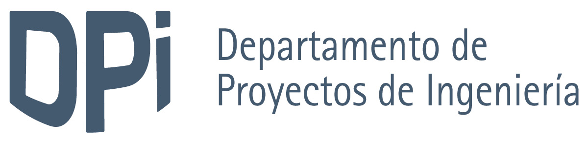
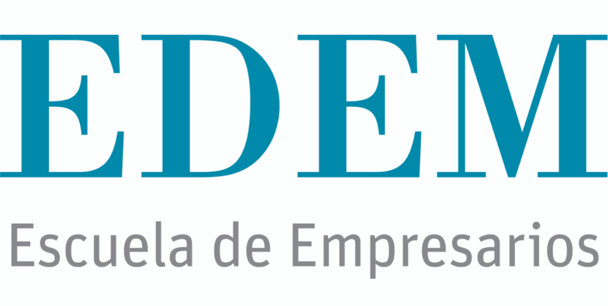
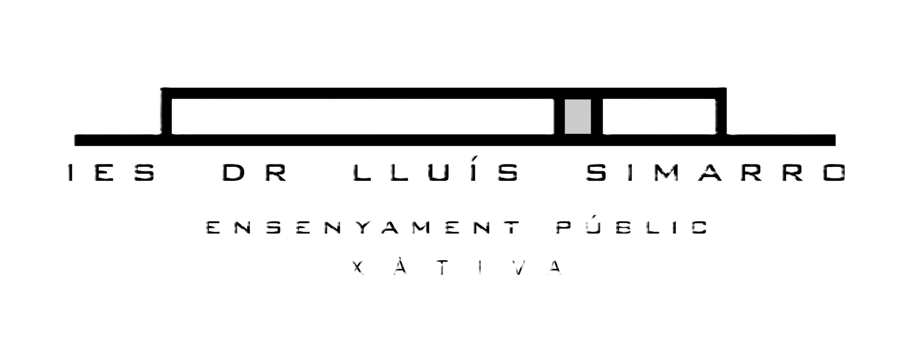
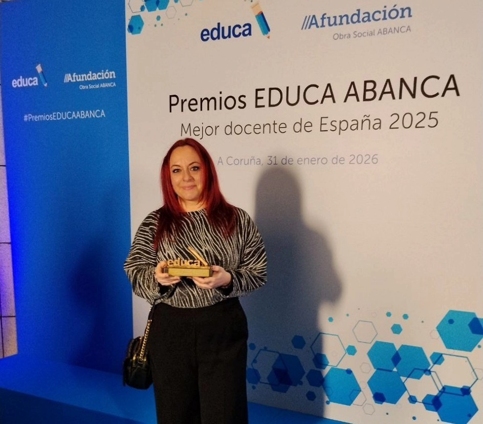
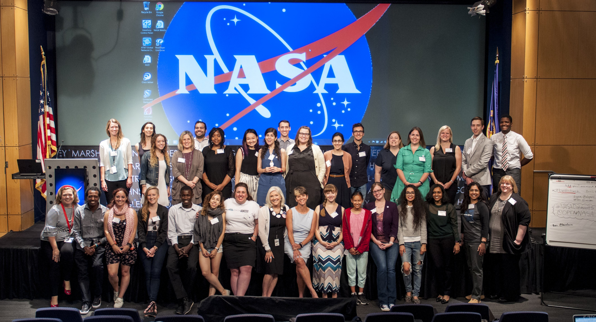
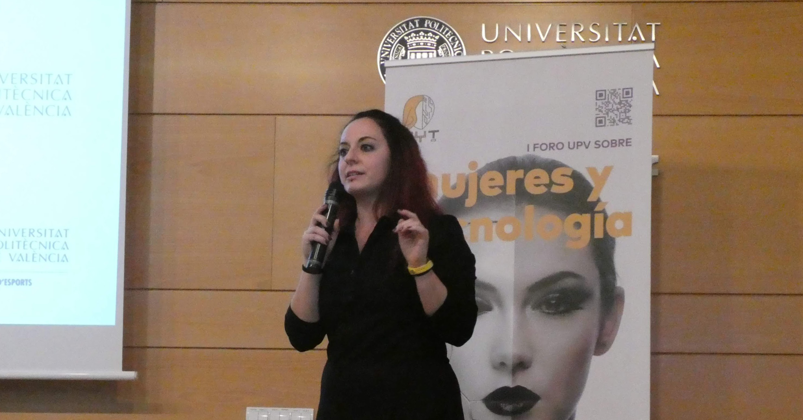
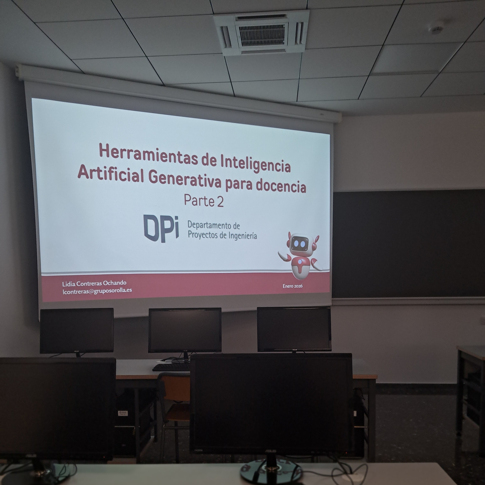

LIDIA CONTRERAS OCHANDO
Doctora en Informática (UPV) | Especialista en IA | +10 Años de docencia | 8.ª mejor docente FP de España (enero 2026, Premios EDUCA ABANCA)
< Instituciones que confían en mí />





< Reconocimientos y Premios />

8ª Mejor Docente FP de España
Galardonada en el Top 10 Nacional Profesional de los prestigiosos Premios Educa Abanca (enero 2026).

Ganadora Múltiple HackForGood
Ganadora reiterada (2015, 2016 y 2018) por el desarrollo de prototipos sociales, predictivos y visuales en la Hackathon nacional.

NASA Datanauts
Seleccionada oficialmente en la promoción "Fall Class 2017" del riguroso programa de datos de la NASA.

Google WTM Ambassador
Embajadora e impulsora del programa Google Women Techmakers en la comunidad de Valencia.
< Ponencias y Formación Específica sobre IA />
-
Formación a PDI/PAS y Alumnado (Universitat de València)
-

Ponencias Especializadas (UPV & EDEM) -
Aplicación Corporativa, Agroalimentaria y Educación Secundaria
< Cursos Universitarios Impartidos />
IA en Ciberseguridad
Máster en Inteligencia Artificial. Universidad Europea de Valencia.
Big Data & Inteligencia Artificial
Grado en Tecnologías Interactivas. UPV Gandía.
Intro a Programación
Grado en Informática. Universitat Politècnica de València.
Bases de Datos
Grado en Informática. Universitat Politècnica de València.
Lenguajes y Paradigmas de Programación
Doble Grado en ADE + Informática. UPV.
Data Science & Visualización
CienciaLab y Talleres Prácticos con RapidMiner y Tableau.
< Trayectoria Académica y Profesional />
Docente de Formación Profesional y Universidad
Docente de programación web y bases de datos en Colegio Sorolla (Grupo Sorolla Educación) y profesora del módulo de IA Aplicada a la Ciberseguridad en el Máster en Inteligencia Artificial de la Universidad Europea de Valencia.
Investigadora Post-doctoral (CSIC-UV & VRAIN-UPV)
Trabajó como investigadora post-doctoral en el centro I2SysBio (CSIC-UV) y posteriormente en el Instituto Valenciano de Investigación en Inteligencia Artificial (VRAIN - UPV).
Doctorado en Informática (UPV)
Tesis doctoral "Towards Data Wrangling Automation" (Beca MECD FPU del Gobierno de España), supervisada por José Hernández-Orallo y Cèsar Ferri en la Universitat Politècnica de València.
Investigadora Visitante (KU Leuven & Uni. Strasbourg)
Investigadora invitada ("visiting scholar") en el prestigioso grupo de Inteligencia Artificial DTAI de la KU Leuven (Bélgica) y en la Université de Strasbourg (Francia).
< Publicaciones Destacadas />
-
De la pizarra al código asistido: Análisis del impacto pedagógico de la Inteligencia Artificial en la enseñanza de programación web en Formación Profesional
-
Enhancing Precision Medicine: An Automatic Pipeline Approach for Exploring Genetic Variant-Disease Literature
-
AUTOMAT[R]IX: learning simple matrix pipelines
-
Towards Data Wrangling Automation through Dynamically-Selected Background Knowledge
-
CRISP-DM Twenty Years Later: From Data Mining Processes to Data Science Trajectories
< Consultoría y Colaboraciones />
¿Buscas implementar IA en tu institución o necesitas formación especializada para tu equipo docente?